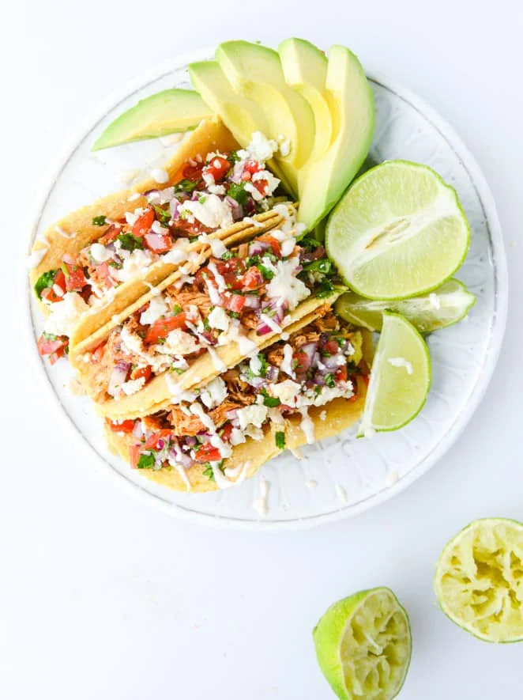

Home
Chicken Tacos

These Chicken Tacos are an easy week night meal
- 1 1/2 pounds boneless, skinless chicken thighs
- 1/2 teaspoon salt
- 1/2 teaspoon pepper
- 2 tablespoons olive oil
- 2 teaspoons ground cumin
- 1 teaspoon smoked paprika
- 1/2 teaspoon chile powder
- 1/2 teaspoon garlic powder
- 1/4 teaspoon chipotle chili powder
- 1/2 teaspoon onion powder
- 1 cup grape tomatoes, quartered
- 1/2 red onion, finely diced
- 1/4 cup fresh cilantro, chopped
- 1 lime, juiced
- 8 to 12 (4-inch) tortillas, flour or corn – your preference!
- 4 ounces queso fresco cheese, crumbled
- 1 avocado, sliced
- extra limes for garnish
Quick Chipotle Lime Crema
- 3 tablespoons greek yogurt
- 1 tablespoon adobo sauce, from a can of chipotles in adobo
- juice of half a lime
- zest of half a lime
- 1/8 teaspoon salt
- Preheat the oven to 375 degrees F.
- Heat a large oven-safe skillet over medium-high heat. Season the chicken with the salt and pepper. Add the olive oil to the skillet and once it’s hot, add in the chicken. Brown the chicken on both sides, about 2 minutes per side. Cover the skillet and place it in the oven, roasting for 20 minutes. In a bowl, combine the cumin, paprika, chili powders, garlic powder and onion power in a bowl. Set aside.
- While the chicken is cooking, combine the diced onion, tomatoes and cilantro in a bowl with the juice of the lime. Add a sprinkle of salt and pepper. Set aside.
- In another bowl, whisk together the yogurt, half and half, adobo, lime juice and zest and salt, whisking well to combine. Set aside.
- As soon as the chicken is finished cooking, add it to the bowl of your electric mixer, or a bowl that you can use a hand mixer with. If you used the chicken thighs, there will be juices in the pan – leave them in the pan and do not discard them because we will use them! Turn the mixer on to low speed for a few seconds to break up the chicken. Add in the spices that you mixer before and mix the chicken on low speed for a full minute or two to completely shred it and mixx with the spices. Transfer the spiced chicken back to the pan with the juices and toss it well, incorporating the juice. This is how the chicken will stay moist (no – we can’t use another word)!
- To assemble the tacos, place the chicken in a tortilla and top with the quick salsa, the crumbled cheese and a drizzle of the crema. Serve with avocado on the side or on top and a fresh squeeze of lime.